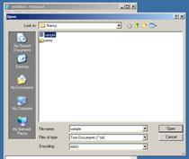

Load/Open
nIn order to open an
old file, choose Open from the File menu.
nYou can
double-click on any file in the window.
nOnly files with the
Files
of type: listed will show. (ie. Only text files will show up in this window)
nTo see every file,
choose All Files.